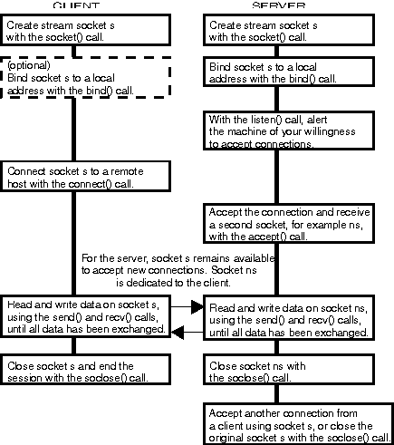

The following figure shows a graphical representation for the general sequence
of socket calls needed to provide communication between applications for
supported socket types. For stream or sequenced packet socket types, and
for datagram socket types, see the following figure. This basic sequence
is the same for each supported protocol family for all supported socket
types. This means that a programmer can modify the protocol family selection
and the networking addressing parameters of an existing sockets program,
recompile and relink, and the program can be run with another protocol.
This also allows programs that use sockets with multiple protocols to be
easily constructed.
A Typical Stream or Sequenced Packet Socket Session
